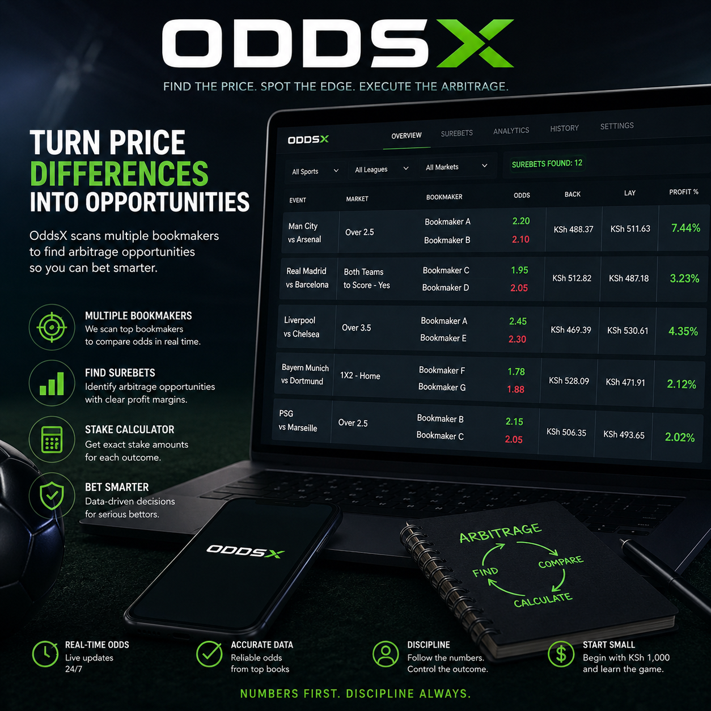

OddsX is built for bettors who want to look beyond individual bookmaker odds and discover opportunities created by differences in prices across multiple sportsbooks.
Bookmakers do not always offer the same odds. OddsX helps you analyze those differences and determine when the combined prices may create an arbitrage opportunity.
Instead of searching through dozens of betting markets manually, OddsX is designed to bring the numbers together and make the opportunity easier to see.
Test the strategy with a small bankroll, track every opportunity, record your actual results, and learn how arbitrage behaves in the real market.
Numbers first. Discipline always.
Get updates, arbitrage insights, and new OddsX features delivered straight to your inbox.
OddsX is an analytical tool for researching betting markets. Arbitrage opportunities are not guaranteed, and bookmaker odds, limits, and availability can change rapidly.